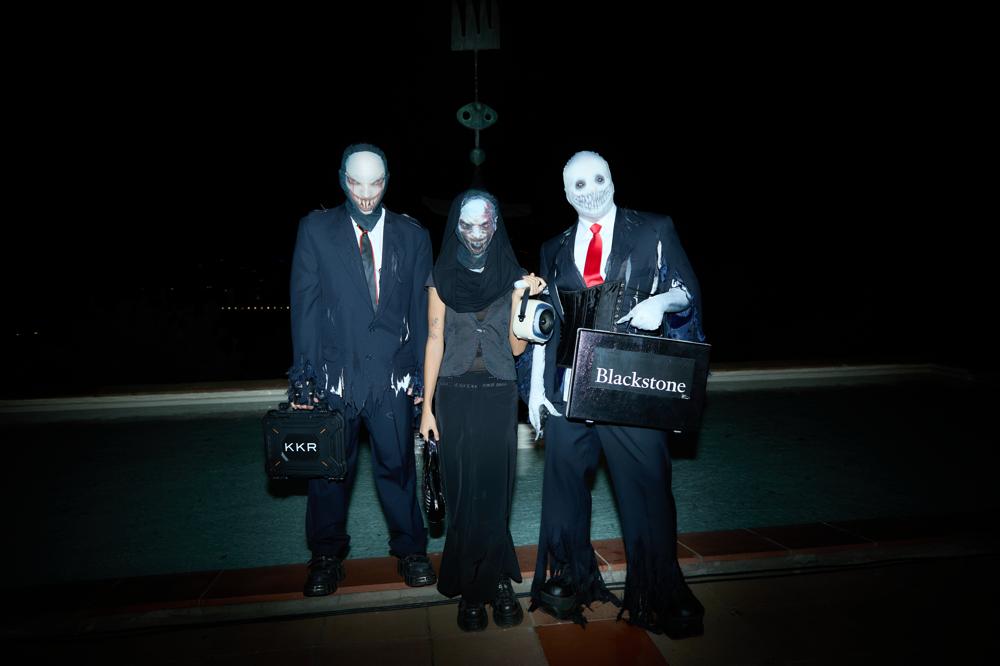

La acción forma parte de Reencarnaciones, un programa de reenactments comisariado por la autora que revisita los 50 años de historia de la Fundació Miró a través del gesto y la performatividad. Les ¥€$Si y Ali reinterpretan Mercurio Splash (2015) de David Bestué y Antoni Hervàs, transformando la fundación en un templo dedicado a Mercurio, dios del comercio y símbolo del turismo contemporáneo. La pieza establece un paralelismo entre el mercurio químico y la turistificación: ambos fluyen, transforman y contaminan. Así, se denuncia cómo el turismo convierte las ciudades en mercancía y degrada su autenticidad. Frente a ello, el gesto de “salpicar” se erige como acto de resistencia colectiva ante la precarización y el desarraigo que provoca.